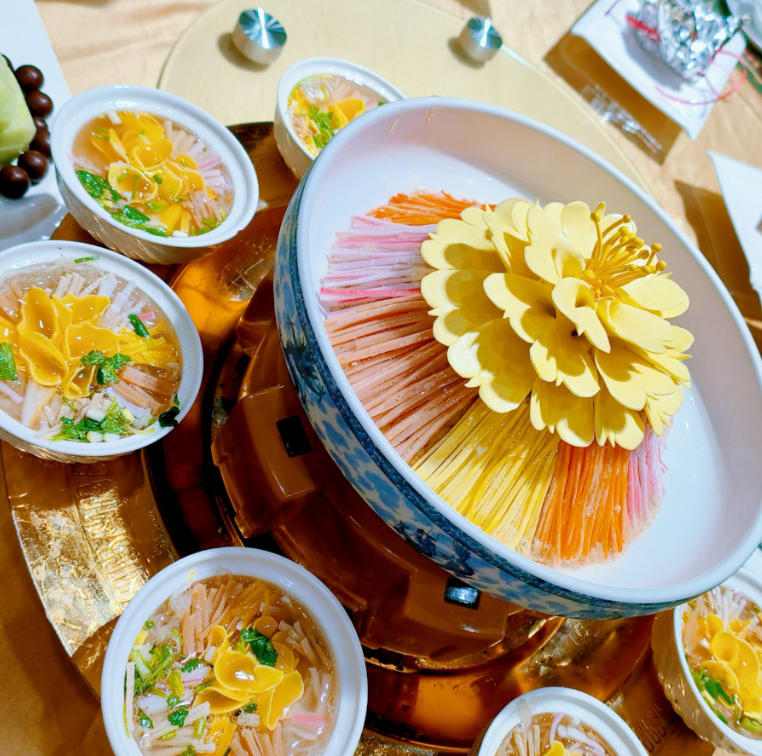
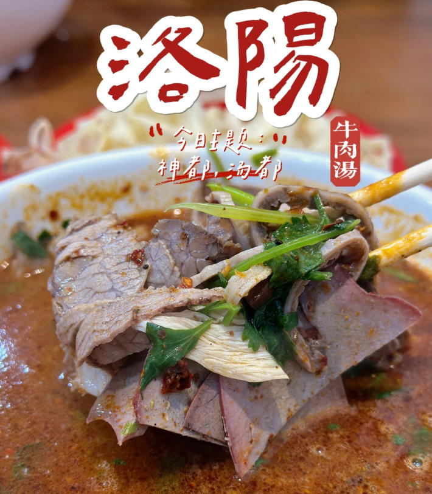
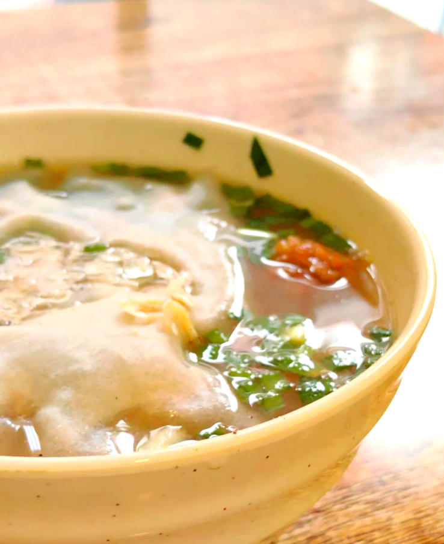
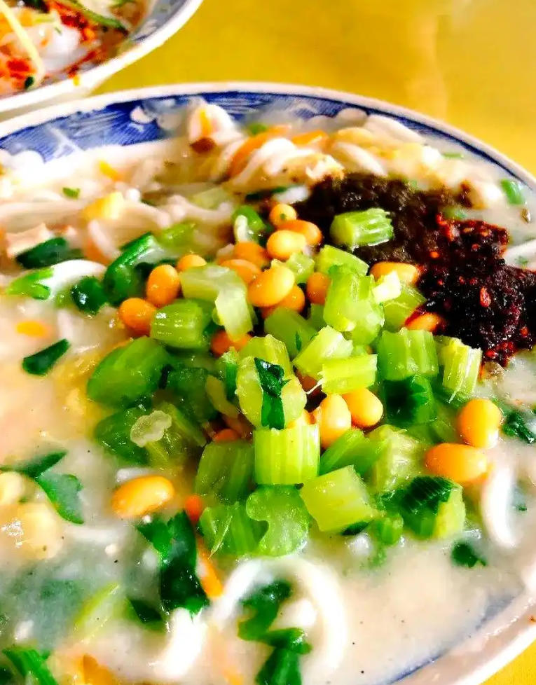
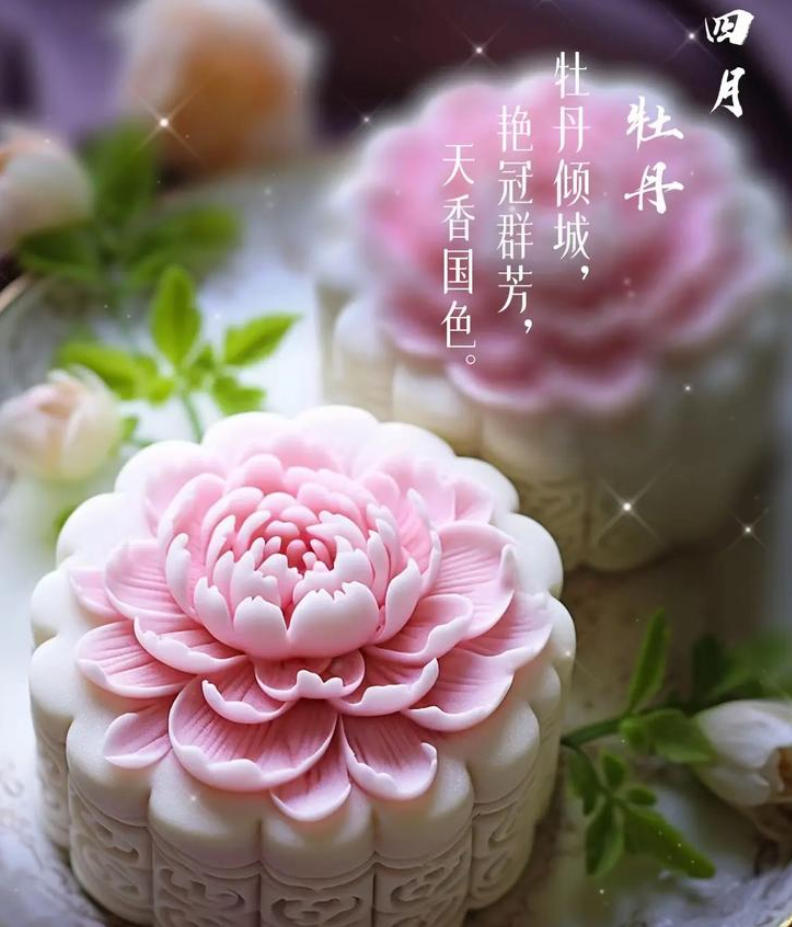
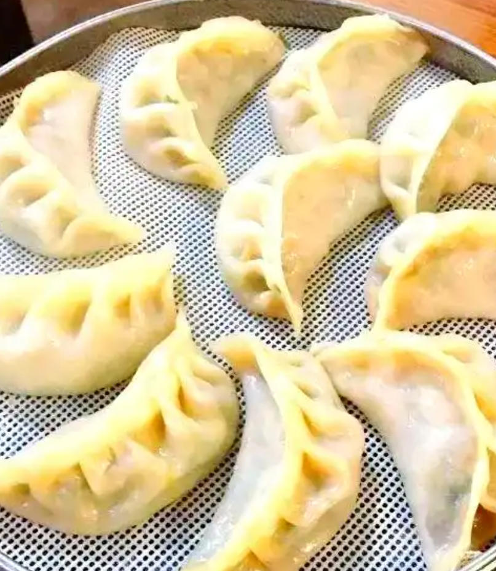

-

Luoyang Water Banquet Imperial Tradition The Water Banquet is Luoyang's most iconic culinary tradition, dating back over 1,000 years to the Tang Dynasty. Consisting of 24 dishes served in sequence, it gets its name from the sour and spicy soup-based courses that flow between dishes like water. Originally created for imperial banquets, it has become a symbol of Luoyang's hospitality. Signature Dishes The banquet begins with "Peony Yan Ruo," a soup shaped like the famous Luoyang peony, followed by dishes such as braised pork ribs, lotus root soup, and the finale "Sour Egg Drop Soup." Each course is carefully timed and served hot. Cultural Significance Recognized as a National Intangible Cultural Heritage, the Water Banquet embodies the refined dining customs of ancient Chinese royalty and remains a centerpiece at weddings, celebrations, and welcoming honored guests in Luoyang.
-

Luoyang Beef Soup Morning Ritual Luoyang Beef Soup is more than a dish — it is a daily ritual for locals who queue at dawn at their favorite soup shops. Made by slow-simmering beef bones for over 12 hours, the rich, milky broth is seasoned with dozens of Chinese spices and served with tender beef slices. The Experience Diners customize their soup with fresh cilantro, chili oil, pickled garlic, and crispy fried dough sticks (youtiao). The best soup shops have been perfecting their recipes for generations, with some families guarding secret spice blends passed down for over a century. Regional Pride Often said that "Luoyang people start their day with a bowl of soup," this beloved dish represents the soul of the city's food culture. Whether at a street stall or a renowned restaurant, a steaming bowl of beef soup is the essence of Luoyang.
-

Peony Flower Cake Edible Art A unique Luoyang delicacy, Peony Flower Cakes are exquisite pastries made with real peony petals harvested from Luoyang's famous gardens. These translucent, flower-shaped desserts are filled with sweet lotus seed paste, red bean paste, or osmanthus honey. Seasonal Delicacy Available primarily during the annual Peony Festival in April, these cakes celebrate Luoyang's 1,500-year love affair with the "King of Flowers." Each petal is carefully selected, cleaned, and preserved to maintain its natural color and fragrance. Artisan Craft Master pastry chefs handcraft each cake into a blooming peony shape, creating a stunning visual presentation that tastes as delightful as it looks. They make perfect gifts and souvenirs that capture the essence of Luoyang's floral heritage.
-

Luoyang Steamed Noodles (Mianpi) Local Favorite Mianpi is a beloved Luoyang street food made from thin sheets of steamed wheat noodles served cold with a tangy sesame and garlic sauce. The translucent noodle sheets are topped with julienned cucumber, bean sprouts, and a drizzle of chili oil. Simple Excellence What makes Mianpi special is its texture — silky smooth yet pleasantly chewy, the noodles absorb the rich sauce while maintaining their delicate structure. It is the perfect balance of flavors: nutty sesame, pungent garlic, sharp vinegar, and subtle heat. Everyday Comfort Found at every corner of Luoyang's Old Town, Mianpi represents the city's approach to food: honest, flavorful, and deeply satisfying. Locals enjoy it as a quick lunch or afternoon snack, often paired with a bowl of soup.
-

White Horse Temple Vegetarian Dishes Temple Cuisine Originating from the White Horse Temple, the cradle of Chinese Buddhism, these vegetarian dishes have been perfected by temple monks over nearly 2,000 years. Made entirely from plant-based ingredients, they showcase remarkable techniques that transform tofu, mushrooms, and vegetables into dishes that mimic the texture and flavor of meat. Buddhist Philosophy The cuisine reflects Buddhist principles of compassion and mindfulness. Each dish is prepared with meditation-like focus, using seasonal ingredients and natural flavors without artificial additives. The presentation follows traditional temple aesthetics of simplicity and harmony. Modern Revival Today, vegetarian restaurants near the White Horse Temple serve these ancient recipes to visitors from around the world, offering a unique culinary experience that combines spiritual tradition with gastronomic excellence.
-

Luoyang Grilled Flatbread (Shaqima) Hearth-Baked Tradition Luoyang's flatbread, baked in traditional clay ovens, has a crispy golden crust and soft, flaky interior. Served with savory lamb or beef, or simply brushed with sesame oil and sprinkled with cumin and salt, it is a staple of Luoyang's dining table. Companion to Soup No bowl of Luoyang beef soup is complete without a piece of freshly baked flatbread. Locals tear the bread into pieces and dip it directly into the steaming broth, where it absorbs the rich flavors while maintaining a satisfying chew. Cultural Staple Baking flatbread is an ancient craft in Luoyang, with master bakers passing techniques through generations. The aroma of freshly baked bread from street ovens is an unmistakable signature of Luoyang's Old Town.
-
 0379-8888-8888
0379-8888-8888
- |
- Luoyang Tourism